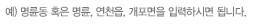

<?
	# 패스 및 클래스
 	include $_SERVER[DOCUMENT_ROOT]."/Root_Path.inc";
	include "variable_config.inc";

	# DB 접속 및 함수
	include "logon.inc";
	include "user_function.inc";

	# step 값 설정
	if(!$step)
	{
		$step = 1;
	}

	// ------------------------------------------------------------------- //
	//	우편번호부 검색 시작
	// ------------------------------------------------------------------- //
	unset($total_record);
	if($step == 2)
	{
		# 전체건수
		$query = "SELECT COUNT(*) FROM CM_POST_C WHERE zp_addr3 LIKE '%$addr%'";
		$total_record = $DB->Value($query);
	}

	if($total_record > 0)
	{
		# 전체 주소정보
		$query = "SELECT zp_uid,zp_code,zp_addr1,zp_addr2,zp_addr3,zp_addr4,zp_ddd FROM CM_POST_C WHERE zp_addr3 LIKE '%$addr%' ORDER BY zp_uid";
	
		$my_zip_arr = $DB->Arr($query);
	}

	// ------------------------------------------------------------------- //
	//	우편번호부 검색 끝
	// ------------------------------------------------------------------- //

	// ------------------------------------------------------------------- //
	//	출력을 위한 설정부분 시작
	// ------------------------------------------------------------------- //
	# body의 onLoad 부분 설정
	$next_step = $step + 1;
	$pr_body_onload = "onLoad=\"document.zipsearch.addr.focus(); return\"";
     
	# 검색창 높이값 설정
	if($step == 1 && $total_record < 1)
		$pr_title_height = "70";
	else
		$pr_title_height = "10";

	# 검색입력 표시어
	if($step == 2 && $total_record < 1)
		$pr_search_info = "검색결과가 존재하지 않습니다! <br>\n";
    
	$pr_search_info .= "찾고자 하시는 동(읍/면/리)을 다시 입력해 주세요!\n";
	// ------------------------------------------------------------------- //
	//	출력을 위한 설정부분 끝
	// ------------------------------------------------------------------- //

	# DB 접속종료
	//include "logoff.inc";
   	//  echo "aa";
?>
<html>
<head>
<title>우편번호 찾기</title>
<meta http-equiv="Content-Type" content="text/html; charset=utf-8">

<style type="text/css">
<!--

body {  font-family: "돋움" , "굴림", " Times New Roman" ; font-size:9pt; text-decoration:none ;
			scrollbar-3dlight-color:595959;         scrollbar-arrow-color:ffffff;         scrollbar-base-color:cfcfcf;
	        scrollbar-darkshadow-color:ffffff;         scrollbar-face-color:cfcfcf;        scrollbar-highlight-color:fffff;         scrollbar-shadow-color:595959}

table, tr, td {  font-family: "돋움", "굴림", "Arial" , "Helvetica" ; font-size:9pt; text-decoration:none ; line-height: 140%	}
img {border: none;}

a:link {  color: #000000; text-decoration: none}
a:visited {  color: #333300; text-decoration: none}
a:active {  color: #336600; text-decoration: none}
a:hover {  color: #FF9900; text-decoration: underline}

.box {Background-color:#FFFFFF; Border:1x SOLID #999999; font-size:9pt; color:#336699; height:18px }

/-->
</style>
</head>

<script language="javascript">
<!--
	function checkIt()
	{
		if (!zipsearch.addr.value)
		{
		    alert("찾고자 하는 주소를 입력하세요!");
			zipsearch.addr.focus();
			return false;
	    }
		zipsearch.submit();
	}

	function selectIt(what,code,address)
	{
		var form_object = eval("opener.document.signform");

		switch(what)
		{
			case 5:
				//-- form 을 정의한다.
				form_object = eval("opener.document.signform");

				form_object.fr_tc_zip_cd.value = code;
				form_object.fr_tc_addr.value = address;
				form_object.fr_tc_addr2.focus();
				break;

			case 6:
				//-- form 을 정의한다.
				form_object = eval("opener.document.signform");

				form_object.fr_ed_zip_cd.value = code;
				form_object.fr_ed_addr.value = address;
				form_object.fr_ed_addr2.focus();
				break;

			case 7:
				//-- form 을 정의한다.
				form_object = eval("opener.document.signform");
				form_object.fr_ce_zip_cd.value = code;
				form_object.fr_ce_addr.value = address;
				form_object.fr_ce_addr2.focus();
				break;

			case 8:
				//-- form 을 정의한다.
				form_object = eval("opener.document.signform");

				form_object.fr_addr_check.value = "Y";
				form_object.fr_zip_cd.value = code;
				form_object.fr_addr.value = address;
				form_object.fr_addr2.focus();
				break;

			case 9:
				//-- form 을 정의한다.
				form_object = eval("opener.document.signform");

				form_object.fr_sen_zip.value = code;
				form_object.fr_sen_addr.value = address;
				form_object.fr_sen_addr2.focus();
				break;


			case 10:
				//-- form 을 정의한다.
				form_object = eval("opener.document.signform");

				form_object.fr_rec_zip.value = code;
				form_object.fr_rec_addr.value = address;
				form_object.fr_rec_addr2.focus();
				break;

			case 11:
				//-- form 을 정의한다.
				form_object = eval("opener.document.signform");

				form_object.fr_sin_zip.value = code;
				form_object.fr_sin_addr.value = address;
				form_object.fr_sin_addr2.focus();
				break;
		}
		self.close();
	}
//-->
</script>

<body bgcolor="#FFFFFF" leftmargin="0" topmargin="0" <?=$pr_body_onload?>>
<form name="zipsearch" method="post" action="<?=$PHP_SELF?>?what=<?=$what?>&step=2"  onsubmit="checkIt();return false">
<table width="523" border="0" cellpadding="0" cellspacing="0">
	<tr>
	   <td height="10" bgcolor="#BE1930"></td>
	</tr>
	<tr>
	   <td></td>
	</tr>
</table>
<table width="523" border="0" cellpadding="0" cellspacing="0">
	<tr>
	   <td height="42" align="center"><?=$pr_search_info?></td>
	</tr>
   <tr>
	  <td align="center" height="103" align="top">

	  <div  style="border:5px solid #efefef;padding:20px;width:420px;">
		   <table width="350" border="0" cellpadding="0" cellspacing="0">
			   <tr>
				  <td width="110" align="right">&nbsp;</td>
				  <td width="150"><input type="text" name="addr" size="20" class="box" style="ime-mode:active" maxlength="15"></td>
				  <td width="100"><input type="image" src="images/post_no.gif" onclick="checkIt();return false;"></td>
			   </tr>
			   <tr>
			   <td colspan="3" align="center"></td>
		   </table>
		   </div>

	   </td>
   </tr>
   <tr>
   <td>
   <?
	if($total_record > 0)
	{
		include "zipstep2.inc";
	}
?>
   </td>
   </tr>
</table>
</form>
</body>
</html>
